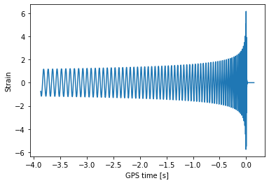
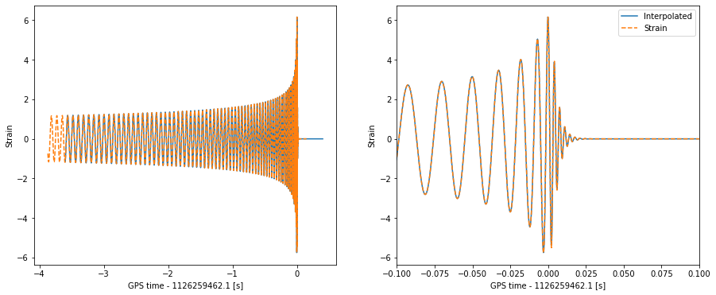
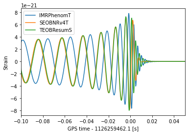

!pip install bilby lalsuite
import lalsimulation as lalsim
import lal
import bilby
import matplotlib.pyplot as plt
import numpy as np
from scipy.interpolate import interp1d
solar_mass = bilby.core.utils.constants.solar_mass
parsec = bilby.core.utils.constants.parsec
Generating time domain waveforms and projecting them onto the detectors
In this notebook, I'll demonstrate how to use lalsimulation to generate a time-domain waveform and how to then use bilby to calculate the response of an interferometer.
Setting a few things up
To get started, let's define some properties of the data we want to simulate. This is the sampling frequency, duration and the amount of time before and after the trigger time (roughly speaking, the peak of the 2,2 mode).
sampling_frequency = 4096
deltaT = 1 / sampling_frequency
duration = 4
post_trigger_duration = 0.5
pre_trigger_duration = duration - post_trigger_duration
Generate a waveform
Now, we'll use lalsim.SimInspiralChooseTDWaveform to generate the plus and cross polarization
# Define the parameters in SI units
mass_1 = 30 * solar_mass
mass_2 = 30 * solar_mass
spin_1x, spin_1y, spin_1z = 0, 0, 0
spin_2x, spin_2y, spin_2z = 0, 0, 0
luminosity_distance = 2000
theta_jn = 0
phase = 0
longAscNodes = 0
eccentricity = 0
meanPerAno = 0
LALParams = lal.CreateDict()
# Get the approximant number from the name
waveform_approximant = "IMRPhenomT"
approximant = lalsim.GetApproximantFromString(waveform_approximant)
# Estimate a minimum frequency required to ensure the waveform covers the data
# Note the 0.95 is a fudge factor as SimInspiralChirpStartFrequencyBound includes
# only the leading order Newtonian coefficient.
f_min = 0.95 * lalsim.SimInspiralChirpStartFrequencyBound(pre_trigger_duration, mass_1, mass_2)
if lalsim.SimInspiralGetSpinFreqFromApproximant(approximant) == lalsim.SIM_INSPIRAL_SPINS_FLOW:
f_ref = f_min
else:
f_ref = 20
h_plus_timeseries, h_cross_timeseries = lalsim.SimInspiralChooseTDWaveform(
mass_1, mass_2, spin_1x, spin_1y, spin_1z, spin_2x, spin_2y, spin_2z, luminosity_distance, theta_jn, phase,
longAscNodes, eccentricity, meanPerAno, deltaT, f_min, f_ref, LALParams,
approximant
)
Extract the data
h_plus = h_plus_timeseries.data.data
h_cross = h_cross_timeseries.data.data
h_plus_time = np.arange(len(h_plus)) * h_plus_timeseries.deltaT + float(h_plus_timeseries.epoch)
h_cross_time = np.arange(len(h_cross)) * h_cross_timeseries.deltaT + float(h_cross_timeseries.epoch)
Project onto the Hanford interferometer
ra = 1.2
dec = -3.1
geocent_time = 1126259462.1
psi = 0.5
H1 = bilby.gw.detector.get_empty_interferometer("H1")
plus_polarization_tensor = bilby.gw.utils.get_polarization_tensor(ra, dec, geocent_time, psi, "plus")
f_plus = np.einsum('ij,ij->', H1.detector_tensor, plus_polarization_tensor)
cross_polarization_tensor = bilby.gw.utils.get_polarization_tensor(ra, dec, geocent_time, psi, "cross")
f_cross = np.einsum('ij,ij->', H1.detector_tensor, cross_polarization_tensor)
strain = f_plus * h_plus + f_cross * h_cross
strain_time = h_plus_time
Plot the data
plt.plot(strain_time, strain)
plt.ylabel("Strain")
plt.xlabel(f"GPS time [s]")
plt.show()

From the plot above (or by inspecting strain and strain_time), we see that SimInspiralChooseTDWaveform outputs the strain on a grid of times with sampling frequency 1/deltaT, but that the duration is determined by f_min and that peak of the 2,2 mode occurs at 0.
We can translate this to the time measured by a detector by simply adding geocent_time, e.g.
strain_detector_time = strain_time + geocent_time
But, we'll want to compare our predicted strain with a timeseries of detector data which will be sampled on a different grid (even if the sampling frequency is identical, we would not expect a sampled timeseries to align with the peak of the 2,2 mode!). To convert, we can interpolate.
Interpolate onto a sampled data grid
n = sampling_frequency * duration
data_start_time = int(geocent_time) - pre_trigger_duration
data_detector_time = np.arange(n) / sampling_frequency + data_start_time
h_interp = interp1d(strain_detector_time, strain, fill_value=0, bounds_error=False)(data_detector_time)
fig, (ax1, ax2) = plt.subplots(ncols=2, figsize=(15, 6))
ax1.plot(data_detector_time - geocent_time, h_interp)
ax1.plot(strain_detector_time - geocent_time, strain, "--")
ax1.set_ylabel("Strain")
ax1.set_xlabel(f"GPS time - {geocent_time} [s]")
ax2.plot(data_detector_time - geocent_time, h_interp, label="Interpolated")
ax2.plot(strain_detector_time - geocent_time, strain, "--", label="Strain")
ax2.set_ylabel("Strain")
ax2.set_xlabel(f"GPS time - {geocent_time} [s]")
ax2.set_xlim(-0.1, 0.1)
ax2.legend()
plt.show()

Putting it all together into a single function
from bilby.gw.utils import _get_lalsim_approximant, convert_args_list_to_float
def get_gw_waveform(time, parameters, waveform_approximant, reference_frequency, bilby_detector, fudge=0.95, reference_frame=None, pre_trigger_duration=None, error=False):
par, _ = bilby.gw.conversion.convert_to_lal_binary_black_hole_parameters(parameters)
mass_1_SI = par["mass_1"] * solar_mass
mass_2_SI = par["mass_2"] * solar_mass
luminosity_distance_SI = par["luminosity_distance"] * 1e6 * parsec
# Extract information about the time series
deltaT = time[1] - time[0]
if pre_trigger_duration is None:
nearest_trigger_idx = np.argmin(np.abs(time - par["geocent_time"]))
pre_trigger_duration = time[nearest_trigger_idx] - time[0]
# Get the approximant number from the name
approximant = _get_lalsim_approximant(waveform_approximant)
# Estimate a minimum frequency required to ensure the waveform covers the data
# Note the 0.95 is a fudge factor as SimInspiralChirpStartFrequencyBound includes
# only the leading order Newtonian coefficient.
f_min = fudge * lalsim.SimInspiralChirpStartFrequencyBound(
pre_trigger_duration,
mass_1_SI,
mass_2_SI,
)
# Check if the reference frequency is used, if not use f_min
if lalsim.SimInspiralGetSpinFreqFromApproximant(approximant) == lalsim.SIM_INSPIRAL_SPINS_FLOW:
f_ref = f_min
elif reference_frequency == "fmin":
f_ref = f_min
else:
f_ref = reference_frequency
iota, spin_1x, spin_1y, spin_1z, spin_2x, spin_2y, spin_2z = bilby.gw.conversion.bilby_to_lalsimulation_spins(
theta_jn=par["theta_jn"], phi_jl=par["phi_jl"], tilt_1=par["tilt_1"], tilt_2=par["tilt_2"],
phi_12=par["phi_12"], a_1=par["a_1"], a_2=par["a_2"], mass_1=mass_1_SI, mass_2=mass_2_SI,
reference_frequency=f_ref, phase=par["phase"])
if "zenith" in par and "azimuth" in par:
par["ra"], par["dec"] = bilby.gw.utils.zenith_azimuth_to_ra_dec(
par['zenith'], par['azimuth'], par["geocent_time"], reference_frame)
longitude_ascending_nodes = 0.
eccentricity = 0.
mean_per_ano = 0.
waveform_dictionary = lal.CreateDict()
args = convert_args_list_to_float(
mass_1_SI, mass_2_SI,
spin_1x, spin_1y, spin_1z,
spin_2x, spin_2y, spin_2z,
luminosity_distance_SI, iota, par["phase"],
longitude_ascending_nodes, eccentricity, mean_per_ano,
deltaT, f_min, f_ref)
h_plus_timeseries, h_cross_timeseries = lalsim.SimInspiralChooseTDWaveform(
*args, waveform_dictionary, approximant
)
plus_polarization_tensor = bilby.gw.utils.get_polarization_tensor(par["ra"], par["dec"], par["geocent_time"], par["psi"], "plus")
f_plus = np.einsum('ij,ij->', bilby_detector.detector_tensor, plus_polarization_tensor)
cross_polarization_tensor = bilby.gw.utils.get_polarization_tensor(par["ra"], par["dec"], par["geocent_time"], par["psi"], "cross")
f_cross = np.einsum('ij,ij->', bilby_detector.detector_tensor, cross_polarization_tensor)
h_plus = h_plus_timeseries.data.data
h_cross = h_cross_timeseries.data.data
h_plus_time = np.arange(len(h_plus)) * h_plus_timeseries.deltaT + float(h_plus_timeseries.epoch)
h = f_plus * h_plus + f_cross * h_cross
t = h_plus_time + par["geocent_time"]
h_interp = interp1d(t, h, fill_value=0, bounds_error=False)(time)
if h_interp[0] == 0:
msg = "Generated waveform was too short"
if error:
raise ValueError(msg)
else:
print(msg)
return h_interp
parameters = dict(
mass_1=36., mass_2=29., chi_1=0.4, chi_2=0.3, luminosity_distance=2000., theta_jn=0.4, psi=2.659,
phase=2.8, geocent_time=geocent_time, ra=1.375, dec=-1.2108
)
for waveform in ["IMRPhenomT", "SEOBNRv4T", "TEOBResumS"]:
w = get_gw_waveform(data_detector_time, parameters, waveform, "fmin", H1)
plt.plot(data_detector_time - geocent_time, w, label=waveform)
plt.xlim(-0.1, 0.05)
plt.ylabel("Strain")
plt.xlabel(f"GPS time - {geocent_time} [s]")
plt.legend()
plt.show()

Time the generation
prior = bilby.gw.prior.BBHPriorDict()
prior["geocent_time"] = bilby.core.prior.Uniform(geocent_time - 0.1, geocent_time + 0.1)
10:29 bilby INFO : No prior given, using default BBH priors in /home/greg/bilby/bilby/gw/prior_files/precessing_spins_bbh.prior.
%%timeit
_ = get_gw_waveform(data_detector_time, prior.sample(), "SEOBNRv4P", 20, H1, fudge=0.8)
1.28 s ± 96.5 ms per loop (mean ± std. dev. of 7 runs, 1 loop each)
%%timeit
_ = get_gw_waveform(data_detector_time, prior.sample(), "IMRPhenomTP", 20, H1, fudge=0.8)
30.9 ms ± 2.82 ms per loop (mean ± std. dev. of 7 runs, 10 loops each)
%%timeit
_ = get_gw_waveform(data_detector_time, prior.sample(), "IMRPhenomPv2", 20, H1, fudge=0.8, pre_trigger_duration=pre_trigger_duration)
13.6 ms ± 237 µs per loop (mean ± std. dev. of 7 runs, 100 loops each)
Profile the generation
%load_ext line_profiler
%lprun -T profile.txt -s -u 1e-3 -f get_gw_waveform get_gw_waveform(data_detector_time, prior.sample(), "IMRPhenomTP", 20, H1, fudge=0.85)
*** Profile printout saved to text file 'profile.txt'.
!head -n 15 profile.txt
Timer unit: 0.001 s
Total time: 0.029128 s
File: /tmp/ipykernel_1170/3049955836.py
Function: get_gw_waveform at line 3
Line # Hits Time Per Hit % Time Line Contents
==============================================================
3 def get_gw_waveform(time, parameters, waveform_approximant, reference_frequency, bilby_detector, fudge=0.95, reference_frame=None, pre_trigger_duration=None, error=False):
4 1 0.1 0.1 0.2 par, _ = bilby.gw.conversion.convert_to_lal_binary_black_hole_parameters(parameters)
5
6 1 0.0 0.0 0.0 mass_1_SI = par["mass_1"] * solar_mass
7 1 0.0 0.0 0.0 mass_2_SI = par["mass_2"] * solar_mass
8 1 0.0 0.0 0.0 luminosity_distance_SI = par["luminosity_distance"] * 1e6 * parsec
9
!tail -n +9 profile.txt | sort -nr -k 3 | head -n 10
60 4 27.6 6.9 94.7 h_plus_timeseries, h_cross_timeseries = lalsim.SimInspiralChooseTDWaveform(
77 1 0.6 0.6 2.0 h_interp = interp1d(t, h, fill_value=0, bounds_error=False)(time)
64 1 0.3 0.3 0.9 plus_polarization_tensor = bilby.gw.utils.get_polarization_tensor(par["ra"], par["dec"], par["geocent_time"], par["psi"], "plus")
38 2 0.2 0.1 0.7 iota, spin_1x, spin_1y, spin_1z, spin_2x, spin_2y, spin_2z = bilby.gw.conversion.bilby_to_lalsimulation_spins(
74 1 0.1 0.1 0.3 h = f_plus * h_plus + f_cross * h_cross
72 1 0.1 0.1 0.3 h_plus_time = np.arange(len(h_plus)) * h_plus_timeseries.deltaT + float(h_plus_timeseries.epoch)
67 1 0.1 0.1 0.2 cross_polarization_tensor = bilby.gw.utils.get_polarization_tensor(par["ra"], par["dec"], par["geocent_time"], par["psi"], "cross")
13 1 0.1 0.1 0.4 nearest_trigger_idx = np.argmin(np.abs(time - par["geocent_time"]))
4 1 0.1 0.1 0.2 par, _ = bilby.gw.conversion.convert_to_lal_binary_black_hole_parameters(parameters)
85 1 0.0 0.0 0.0 return h_interp
We can remove that lookup for the pre_trigger_duration if we know it
%lprun -T profile.txt -s -u 1e-3 -f get_gw_waveform get_gw_waveform(data_detector_time, prior.sample(), "IMRPhenomTP", 20, H1, fudge=0.85, pre_trigger_duration=pre_trigger_duration)
!tail -n +9 profile.txt | sort -nr -k 3 | head -n 10
*** Profile printout saved to text file 'profile.txt'.
60 4 38.3 9.6 91.5 h_plus_timeseries, h_cross_timeseries = lalsim.SimInspiralChooseTDWaveform(
77 1 1.5 1.5 3.7 h_interp = interp1d(t, h, fill_value=0, bounds_error=False)(time)
74 1 0.8 0.8 2.0 h = f_plus * h_plus + f_cross * h_cross
38 2 0.4 0.2 0.9 iota, spin_1x, spin_1y, spin_1z, spin_2x, spin_2y, spin_2z = bilby.gw.conversion.bilby_to_lalsimulation_spins(
64 1 0.2 0.2 0.6 plus_polarization_tensor = bilby.gw.utils.get_polarization_tensor(par["ra"], par["dec"], par["geocent_time"], par["psi"], "plus")
4 1 0.2 0.2 0.4 par, _ = bilby.gw.conversion.convert_to_lal_binary_black_hole_parameters(parameters)
75 1 0.1 0.1 0.1 t = h_plus_time + par["geocent_time"]
72 1 0.1 0.1 0.3 h_plus_time = np.arange(len(h_plus)) * h_plus_timeseries.deltaT + float(h_plus_timeseries.epoch)
85 1 0.0 0.0 0.0 return h_interp
84 print(msg)